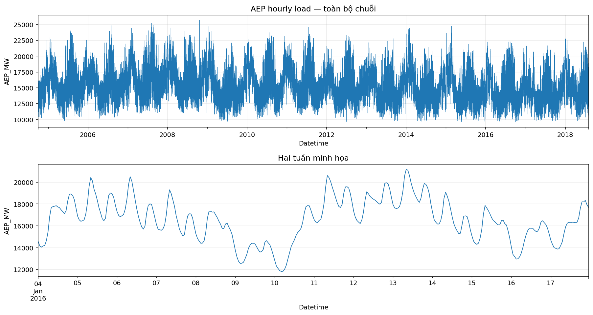
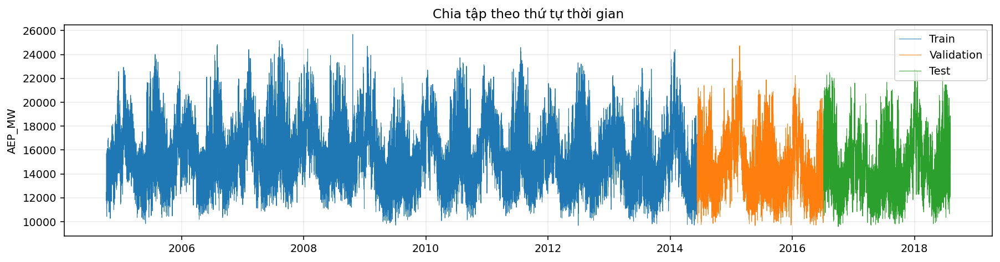
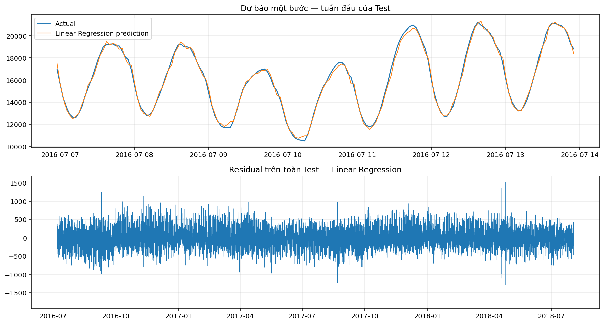
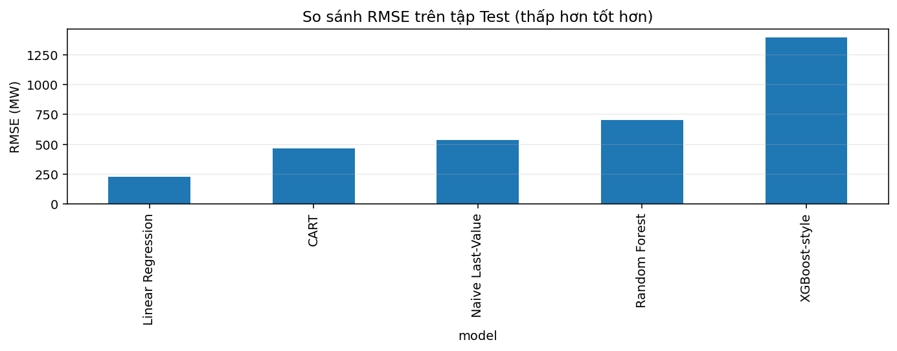
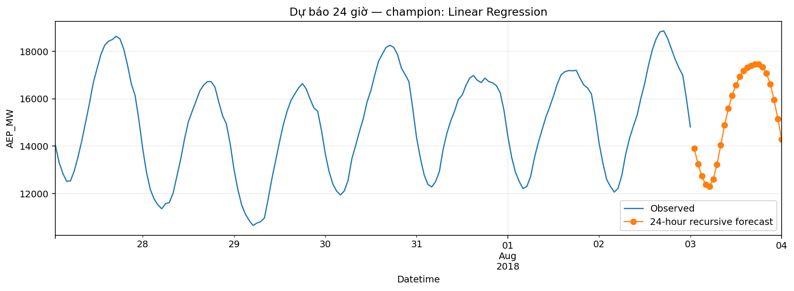

Run ID: 20261125_043541
Dataset: AEP_hourly.csv (real_source)
Selected model: Linear Regression (selected by Validation RMSE)
Run status: SUCCESS
Important: Test metrics are reported only after model selection. The Test features are rolling one-step-ahead features, so actual observations from earlier test timestamps are available to form later lag features. This is not the same as a fixed-origin 24-hour forecast.
On AEP_hourly.csv, 121,296 cleaned hourly observations were used. Linear Regression was selected using Validation RMSE (246.14 MW). Its held-out Test RMSE was 228.49 MW. A recursive 24-hour forecast was generated.
C:\Users\Bin\Documents\Lab_TimeSeries\data\raw\AEP_hourly.csvFeature rows are ordered by timestamp. Train/Validation/Test are contiguous chronological partitions with no shuffle.
| Partition | Rows | Start | End | Target ratio |
|---|---|---|---|---|
| Train | 84,789 | 2004-10-08 01:00:00 | 2014-06-10 21:00:00 | 70% |
| Validation | 18,169 | 2014-06-10 22:00:00 | 2016-07-06 22:00:00 | 15% |
| Test | 18,170 | 2016-07-06 23:00:00 | 2018-08-03 00:00:00 | 15% |
[1, 2, 3, 6, 12, 24, 48, 168][6, 12, 24, 168]; rolling calculations are shifted by one timestamp before aggregation.TrueExpanding-window CV uses 5 folds inside the Train partition only. Each fold trains on an earlier block and validates on the following block. Validation and Test partitions are not included in CV.
| Model | Mean RMSE | Std RMSE | Mean MAE | Mean R² |
|---|---|---|---|---|
| Naive Last-Value | 575.926 | 33.729 | 441.614 | 0.950 |
| Linear Regression | 277.589 | 29.939 | 199.313 | 0.988 |
| CART | 513.221 | 37.486 | 405.312 | 0.960 |
| Random Forest | 756.342 | 73.556 | 583.523 | 0.913 |
| XGBoost-style | 1,435.365 | 72.273 | 1,129.681 | 0.690 |
| Model | CV RMSE mean | Validation RMSE | Test MAE | Test RMSE | Test MAPE (%) | Test R² | Fit s |
|---|---|---|---|---|---|---|---|
| Naive Last-Value | 575.926 | 534.446 | 417.325 | 534.753 | 2.853 | 0.954 | 0.00 |
| Linear Regression | 277.589 | 246.137 | 171.907 | 228.494 | 1.170 | 0.992 | 0.07 |
| CART | 513.221 | 466.009 | 375.121 | 465.906 | 2.558 | 0.965 | 0.50 |
| Random Forest | 756.342 | 755.079 | 557.222 | 705.227 | 3.900 | 0.920 | 0.35 |
| XGBoost-style | 1,435.365 | 1,458.039 | 1,135.129 | 1,396.239 | 8.191 | 0.684 | 0.20 |
model_summary.csv.The selected model was refitted on Train + Validation and used for 24 recursive hourly steps. Every predicted value is appended to history and is used to build the next lag/rolling row. No future ground truth is used for this future forecast.
The archived notebook contains a prior experiment using the library implementations of scikit-learn and XGBoost. Its values are preserved for provenance only; they are not current results from the NumPy scratch models and should not be compared as a controlled, apples-to-apples benchmark.
Legacy snapshot file is archived separately in reports/lab03/legacy/.





notebooks/lab03/Lab03_TimeSeries.ipynb and choosing Run All.AEP_hourly.csv in data/raw/ with columns Datetime and AEP_MW for the real-data experiment.